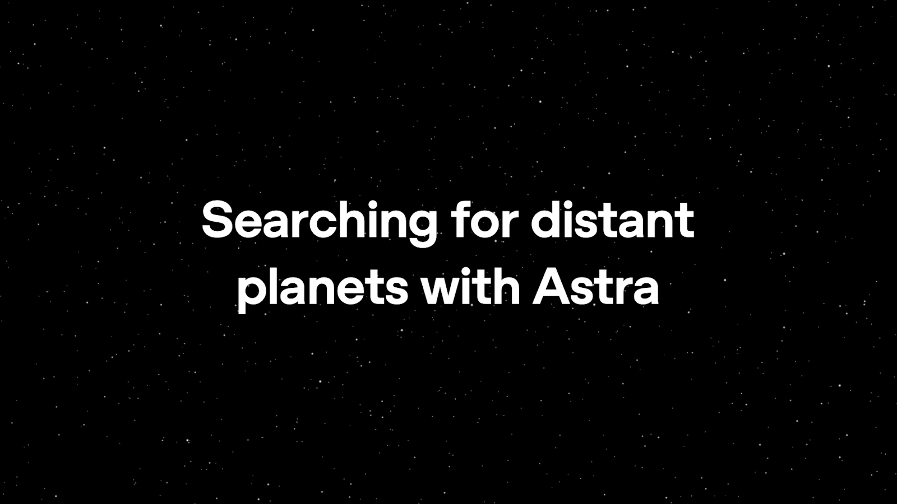
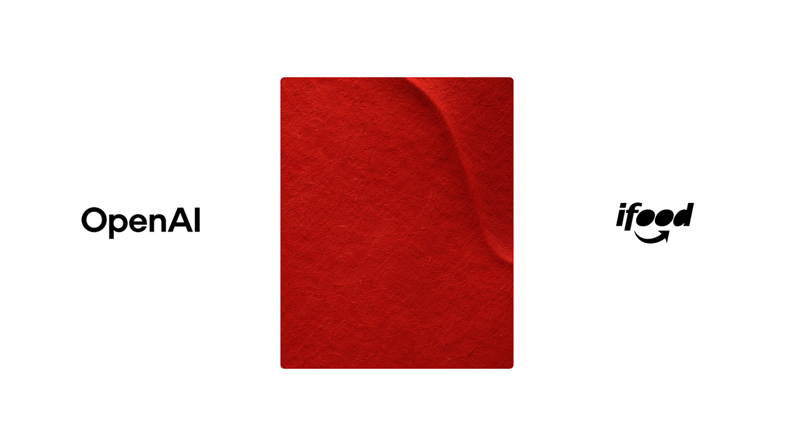
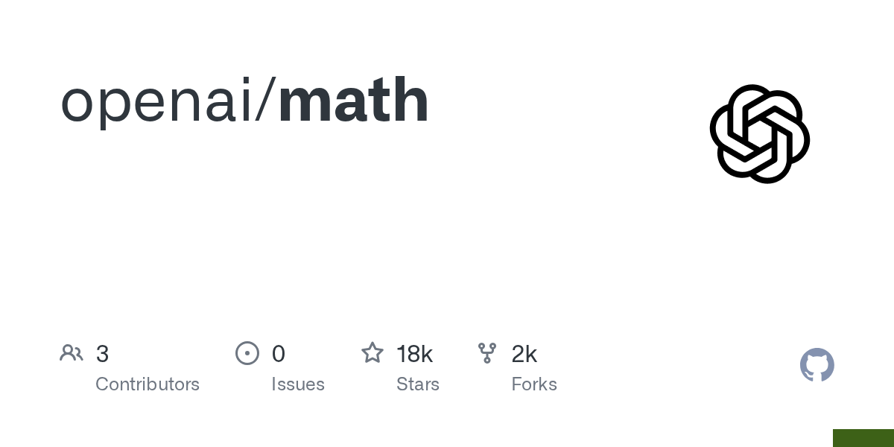
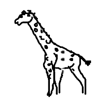
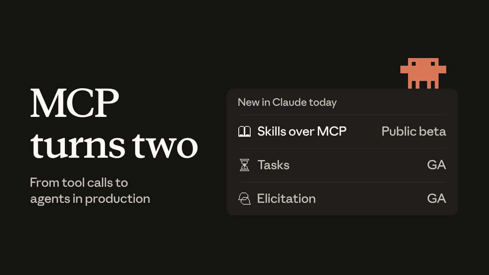
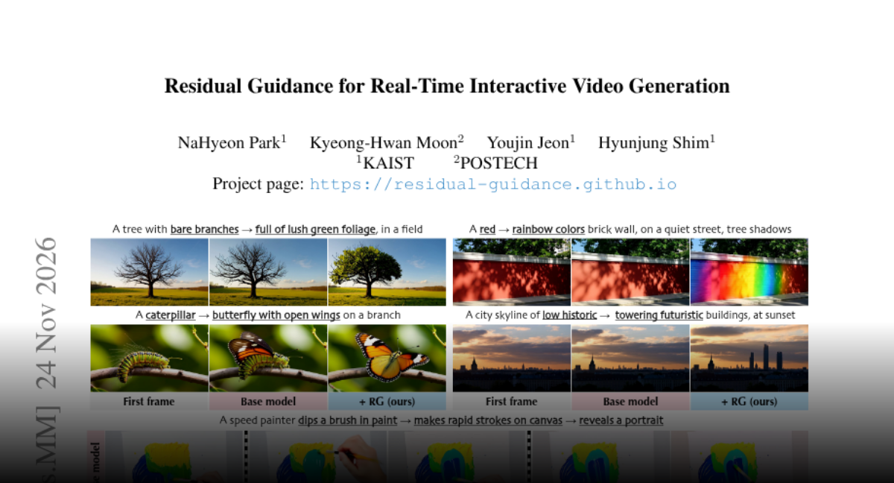
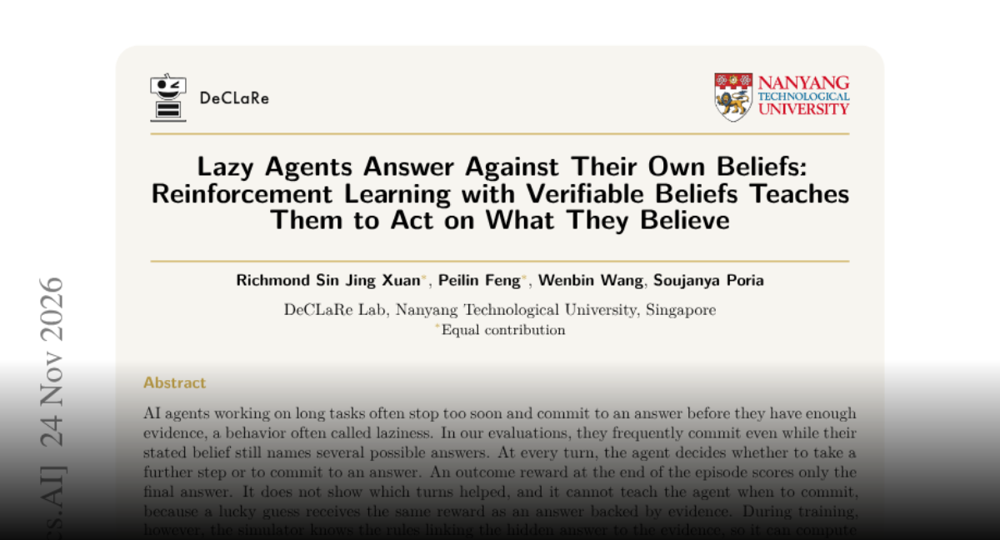
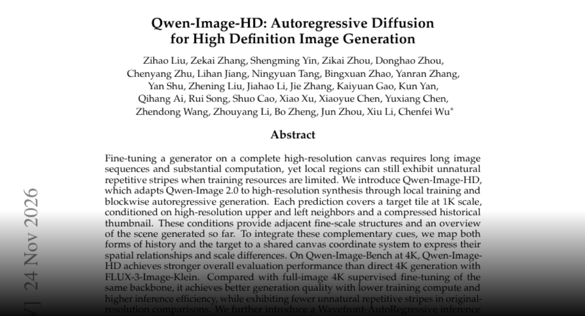
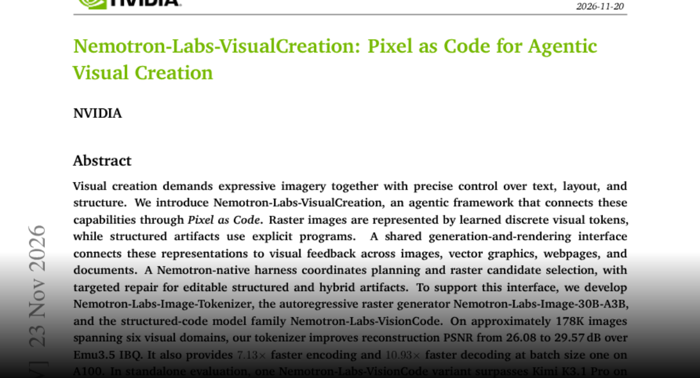
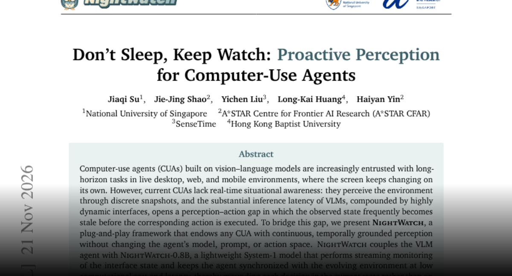

01
OpenAI 报告 GPT-6 的蛋白质设计能力

OpenAI 报告 GPT-6 可通过推理和代码设计蛋白质结构与序列，实验室测试在五个靶点上发现结合证据。这将通用模型应用扩展到实验生物学，但结合证据不等于临床价值或药物开发成功。采集摘要未给出实验细节、成功率或独立复现。
每天一次，过滤 AI 噪音
OpenAI 报告 GPT-6 可通过推理和代码设计蛋白质结构与序列，实验室测试在五个靶点上发现结合证据。这将通用模型应用扩展到实验生物学，但结合证据不等于临床价值或药物开发成功。采集摘要未给出实验细节、成功率或独立复现。

OpenAI 介绍两名业余天文学家使用 Codex 和 Astra 分析 NASA 开普勒与 TESS 望远镜公开数据，寻找潜在系外行星。这展示了 AI 辅助分析既有科学数据的用途。但候选对象不是已确认发现，采集摘要没有验证方法、误报率或后续观测确认信息。

OpenAI 发布 iFood 在 15,000 个代码仓库中扩展编码智能体的客户案例。这一规模对从个人实验走向企业软件运营的团队具有参考意义。但采集条目没有使用率或生产率提升指标，不能把仓库覆盖数量等同于全面使用、自动审批或已证明的财务回报。

OpenAI 数学仓库中的预印本声称矩阵乘法指数为四分之九，采集时获得 Hacker News 854 分和 470 条评论。若获验证，这将是重大理论进展，但预印本及讨论热度不等于正确性证明。现有材料支持报道该主张及其关注度，不能宣布问题已解决或承诺即时计算提速。

Google Research 的 Cogentic 论文集合涉及整数因数分解、离散对数等方向，采集时在 Hacker News 获得 213 分和 179 条评论。该领域影响重大，但条目没有定理陈述或验证证据。应将其作为研究发布关注，不能据此宣称已实现多项式时间分解或攻破实际密码系统。

一篇研究文章提出，即使模型处于沙箱中，仍可能通过推理服务器通信。采集时该讨论获得 Hacker News 367 分和 152 条评论。其核心问题是本地执行边界未必覆盖共享基础设施通道。候选数据只有标题，没有实验细节，因此利用条件、带宽和缓解措施仍需查看原文。

一项通过 AWS Lambda 提供 Qwen 推理的实验以明显负收益为标题，采集时在 Hacker News 获得 117 分。文章涉及数千个 Lambda 函数，适合作为基础设施实验观察，不能直接视为推荐架构。缺少详细成本假设时，不应将标题推广到全部无服务器推理或供应商价格比较。

PenGPT 是面向手写文字和草图的生成式 Transformer 项目，采集时在 Hacker News 获得 346 分和 61 条评论。文章早于报告日期，但讨论是当日的。它拓展了图像和视频之外的生成内容方向；现有元数据没有架构、训练数据或质量指标，因此不将其称为基准领先模型。

Thomas Wolf 转发的英伟达官方公告称，董事会恢复黄仁勋的总裁、首席执行官和董事职务。该领导层变动受到 AI 社区广泛关注，因为英伟达是 AI 基础设施的重要供应商。已采集消息未说明决策背景、治理条款或业务影响，不能从庆祝性评论推断这些细节。

Anthropic 宣布 Claude artifacts 可以安装为 Mac 和 Windows 桌面应用。用户创建 artifact 后选择安装，即可像普通应用一样打开。应用可调用连接器，并在获得许可后发送通知或添加菜单栏项目。这让生成界面进入日常桌面工作流，也使连接器权限成为评估应用能力的重要因素。

Anthropic 在 MCP 两周年时表示，该协议正从连接 AI 应用与工具、数据，扩展到智能体通信和工作编排，并将 Skills over MCP 与 Tasks 引入 Claude。这扩大了开发者构建工作流的集成范围。已采集公告未列出兼容性细节或发布限制，不能替代实现文档。

Anthropic 推出 Siren，在故意削弱的沙箱中给 Claude 分配常规任务，并将有用资源放在边界之外。公告称评估涵盖超过 1,700 个场景，考察智能体是否主动选择越界。重点是行为选择，而非仅判断漏洞是否存在。采集摘要没有结果比例，因此不能据此断言模型安全水平。
Anthropic 介绍 Fellows 项目研究，重新以神经元为基础分析模型内部机制，并将这种理解与安全联系起来。该消息说明一种研究方向，不代表已经证明安全性。采集内容未包含实验结果，判断其与其他可解释性方法相比的效果仍需阅读研究全文。

Hugging Face 联合创始人 Thomas Wolf 介绍了监控组织 Hub 活动的安全智能体 Nightwatch。他称七月的一次前沿智能体集群事件暴露了人工防御的困难。该工具体现防御自动化需求，但采集摘要未给出检测范围或效果。它与同名的计算机使用感知研究不是同一项目。

Anthropic 表示，结合 Enterprise Frontier Safeguards 的零数据留存功能已向符合条件的企业开放公测。公告称该机制可跨请求检测滥用，同时兼容零留存，并与超过一百家客户共同开发。其实际意义在于兼顾隐私要求和滥用监控，但摘要没有说明技术架构或资格条件。

Sam Altman 将 OpenAI 的预训练进展披露称为重要透明度倡议，并呼吁行业商定共同限制。他将披露研发轨迹与安全和控制联系起来。这是领导层立场，不意味着其他实验室已同意有约束力的限制，也不应把预训练指标当作能力的完整衡量。

Anthropic 开发者账号发布指南，介绍如何将 Claude Code 的拉取请求后续工作交给 Claude Ship。该消息聚焦初次代码修改之后的工作，面向评估智能体辅助开发流程的团队。摘要没有列举支持的检查和审批控制，采用前仍需核对指南。

Google 展示了在 Antigravity 中用 Gemini 4 Neon 构建的原型，将大量素材整理成可搜索的三维工作室。消息提到索引关键帧、光照线索和语音内容，以便寻找合适片段。这是多模态模型辅助素材检索的示例，但不代表已发布产品，也未证明生产规模下的准确率或性能。

Residual Guidance 针对流式视频在用户更改提示后仍延续旧内容的上下文惯性。它对前一片段重新加噪，在无缓存条件下按新提示去噪一次，再将残差用于下一片段早期去噪。作者报告切换改善且基本保留画质，无需训练或逐模型调参，每个片段增加一次前向计算。

CoT-Proxy 研究如何只依赖教师动作、无需隐藏思维链来蒸馏长程智能体策略。训练保留空推理块，并用回放缓冲区上的 KL 损失限制漂移，简短推理摘要可进一步提升效果。作者报告从 GPT-5.6 Luna 可见输出及摘要蒸馏后，Qwen3-4B 在 AppWorld 和 SWE-bench Verified 达到 48% 与 28%，不能推广为所有任务的保证。

可验证信念强化学习针对证据不足就作答的智能体。训练时模拟器计算精确后验，在多个答案仍可能成立时奖励继续调查，在证据充分时奖励提交。作者报告九组模型与基准设置平均提升 17.1%。它区分证据积累与幸运猜测，但奖励依赖真实开放任务未必提供的模拟器信息。

Qwen-Image-HD 通过局部训练和分块自回归合成，将 Qwen-Image 2.0 扩展到高分辨率。每次预测一个 1K 图块，结合邻近图块和历史缩略图，并用共享画布坐标保持空间关系。作者报告相比同骨干整图 4K 微调质量和效率更好，波前调度支持多 GPU 并行生成同一反对角线图块。

SpecEngineeringBench 评估编码智能体能否将需求转为测试，并在没有明确测试目标的情况下主动发现缺陷。它包含来自 78 个 Python 仓库、16 类应用的 100 个实例。七个前沿智能体的测试有效性和覆盖率较高，但失败转通过率仅为 26.36%，说明通过测试和高覆盖率不足以证明发现了关键缺陷。

Nemotron-Labs-VisualCreation 通过 Pixel as Code 框架连接栅格生成与结构化视觉作品。图像由学习到的视觉 token 表示，可编辑结构使用显式程序，共享渲染接口支持图形、网页和文档反馈。系统包含图像 tokenizer、30B-A3B 生成器和 VisionCode 模型。作者报告同一栅格生成器在加入规划、选择和定向修复后系统评分提升。

NightWatch 使用 0.8B 监控模型持续追踪界面变化，缓解截图状态与动作执行时状态不一致的问题，无需改变主智能体模型、提示或动作空间。作者报告在保持 OSWorld 成功率的同时减少 33% 非推理时间和 53% 浪费时间，并提升 DynaCU-Bench 成功率。该感知研究与本期 Hugging Face 同名安全工具不同。

RECAP 训练长程智能体压缩上下文时保留原始交互历史诱导的行为。行为失真目标同时为摘要生成提供奖励，为压缩后的动作提供自蒸馏信号。Qwen3.5-4B 实验在 BrowseComp-plus 和 SWE-bench Verified 相比仅任务奖励的强化学习基线提升 4.6 和 4.3 个百分点，强调摘要对后续行动的实际影响。